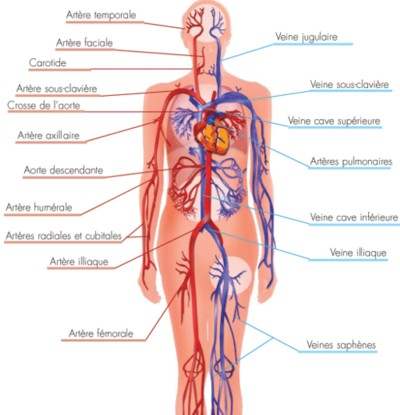
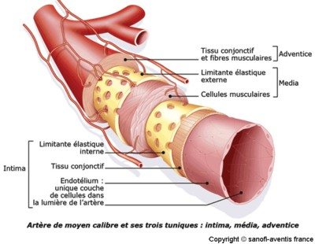
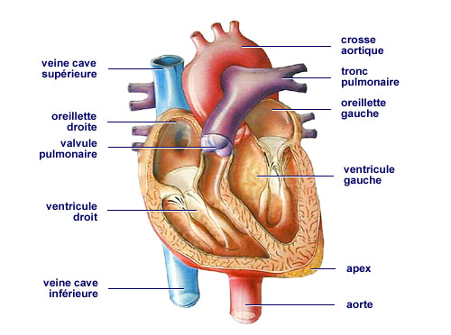
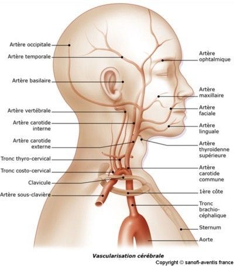
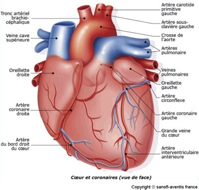
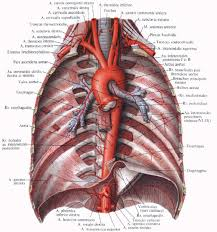
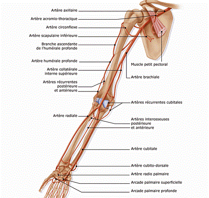
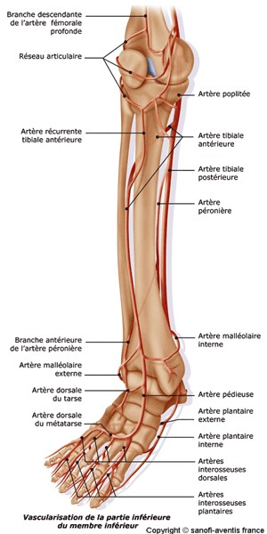
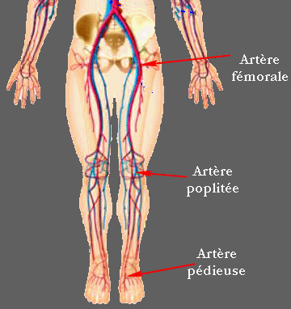
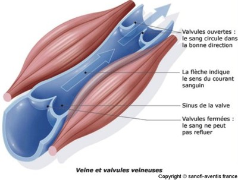

Anatomie vasculaire
Histologie des vaisseauxLe sang circule e l'interieur d'un systeme de canaux, les vaisseaux, alimentes par l'activite du cœur.
Il existe trois categories de vaisseaux :

Tous les vaisseaux sauf les capillaires comprennent 3 couches :

Les arteres sont les vaisseaux conduisent le sang depuis le cœur jusque dans les organes.
Le systeme arteriel de la petite circulation
L'artere pulmonaire sort du ventricule droit et se divise en deux pour irriguer chaque poumon puis pour se diviser encore en arteres lobulaires puis encore en petites arteres : les arterioles et enfin qui aboutissent aux alveoles pulmonaires.

Le systeme arteriel de la grande circulation
L’aorte
qui sort du ventricule droit forme la crosse aortique qui s’enroule
autour du cœur et d’oe vont partir :






Les veines sont les vaisseaux qui ramenent le sang depuis les organes vers le cœur.
Elles sont tres dilatables et peuvent servir de reservoir sanguin. La plupart des veines suivent les trajets des arteres et se trouvent meme souvent incluses dans une meme gaine de protection.
Elles portent le meme nom que les arteres auxquelles elles se rapportent sauf les gros troncs qui penetrent dans le cœur (veines caves) sauf le systeme qui relie le mesentere au foie (veine porte) sauf les veines de surface de la cuisse (les saphenes).
Des veines dites perforantes relient les veines superficielles aux veines profondes. Dans l’endothelium, les veines comportent des veines ou des petites valvules qui empechent le reflux.
Le retour veineux est du :


Les capillaires sont des vaisseaux microscopiques intermediaires entre les arteres et les veines, reliant ces deux systemes, et grece auxquels le sang parvient au contact direct de toutes les cellules de l'organisme.
Les capillaires sont extensibles, ils constituent 7000 me de surface d’echange entre le sang et les tissus, par exemple les globules blancs vont pouvoir traverser leur paroi et jouer ainsi un rele dans les reactions de defense des tissus.
La distribution des liquides des capillaires vers les tissus environnants depend des differentes pressions qui existent dans les capillaires et les venules (capillaire veineux). Normalement, les liquides passent dans les veines mais si les capillaires sont distendus, la diffusion augmente et l’excedent de filtration sera draine par le systeme lymphatique.
La circulation lymphatique se compose de deux parties plus ou moins independantes :
Les vaisseaux lymphatiques
Au niveau des capillaires sanguins se produit une transsudation du plasma et des globules blancs. Cette traversee des parois des capillaires forme le liquide interstitiel dans le quel baignent les cellules, la lymphe.
Dans la lymphe les cellules puiseront ce dont elles auront besoin (les substances nutritives) et rejetteront leurs dechets. La lymphe fait retour e la circulation generale par la circulation lymphatique.
La lymphe
La lymphe est un liquide jaunetre de reaction alcaline, il s'agit d'un filtrat du plasma sanguin.,
Elle contient des globules blancs ou lymphocytes mais pas de globules rouges.
Le rele de la lymphe est multiple :
Les ganglions lymphatiques
Les ganglions lymphatiques renferment des macrophages qui absorbent les dechets. Les vaisseaux lymphatiques se trouvent dans tout l’organisme.
Les capillaires lymphatiques sont collectes dans des canaux lymphatiques vers des vaisseaux lymphatiques puis vers des ganglions lymphatisme (renflement pour les dechets).
Les chaenes de ganglions lymphatiques se situent au niveau :
Toutes les voies lymphatiques aboutissent au systeme veineux cave superieur qui aboutit au cœur droit (oreillette droite).
Les autres organes lymphatiques
La rate qui contribue e la meme chose que les vaisseaux lymphatiques.
Voir aussi :
|
Accueil
| Sciences infirmieres |
Soins et techniques
|
Pharmacologie et Therapeutiques
|
Examens
biologiques |
Examens medicaux
| Version imprimable e Samir ISP tous droits reserves design : xgraphik.com modifie par M. Pitte |
 haut
de page
haut
de page